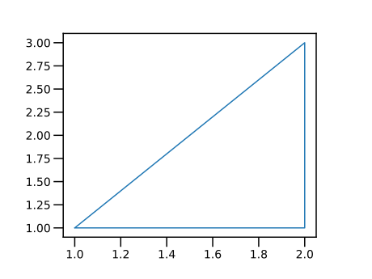
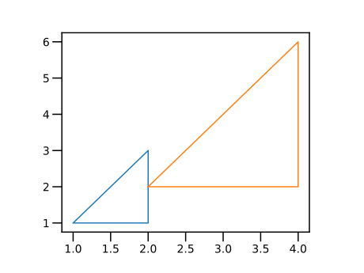
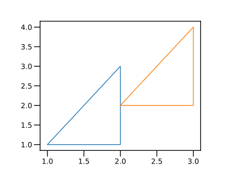
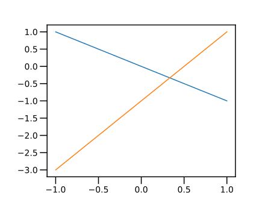

第1回：▼ 簡単なグラフを描く
■ 対話形式で使う
本文では，対話形式で，Julia を利用する．
Juliaをコマンドラインから利用している場合は， プロンプト julia> が印字され，利用者の入力を待っている．
命令を打ち込み，ENTER キーを押すと， その命令を計算（評価）した結果が印字される．
julia> 11
上の例では，1 という文字の並びから， 1 という数を内部で作成し， それを計算の結果として印字したのである．
計算機側から見ると， 利用者の入力を読み込み（Read）， 入力された命令を評価し（Eval）， その結果を印字する（Print）ことを，繰り返す（Loop）． この４つの頭文字をとって， 対話型利用のことを REPL とも呼ぶ．
Jupyter notebookを用いる場合には， Code cellが表示されている． ここに命令を打ち込み，SHIFT + ENTER キーを押すと， その命令を評価した結果が出力される．
■ 電卓として使う
数と数との四則演算をしてみよう．
加算には + ， 減算には - の文字を使う． 乗算には *（アスタリスク asterisk と読む）， 除算には /（スラッシュ slash と読む）の文字を用いる．（なお % は残余を表す→ ■ 残余 rem と整商 div ）
julia> 1 + 23julia> 3 * 412
数式と同じように，乗算と除算は，加算・減算に優先する． 計算の順序を変えるには，括弧 ( と ) との組を用いる
julia> 2 + 3 * 414julia> (2 + 3) * 420
除算の結果は，小数となる．
julia> 2 / 21.0julia> 1 / 30.3333333333333333julia> 5 / 22.5
■ 変数に値を代入する
値には，名前（名札，ラベル）をつけることができる． この名前を変数（variable）といい，名前をつける操作を「値を変数に代入する（assign）」という． 変数には，色々な種類（「型」）の値を代入できる．
変数を評価すると，変数の値となる．
julia> # 変数 x に 値 2 を代入する x = 22julia> # 変数 x の値を用いる x + 13julia> # 変数 x に 別の値 3 を再代入する x = 33
# はコメントである． # から行末までの文字は，すべて無視される．
■ 変数名の規則
Allowed Variable Names (section)
変数の名前（変数名）は，以下のようにつける．
変数名の最初の文字は， 半角のアルファベット（ a から z まで，A から Z まで）， または，下線（アンダースコア _ ）のいずれかでなければならない． 変数の2文字目以降は，さらに，半角の数字（ 0 から 9 ）， または，半角の感嘆符 ! を含めることができる．
半角文字とは「かな漢字変換機能」を用いずに， キーボードから打ち込める文字と考えてよい．
変数名には，漢字やギリシャ文字などを使うことができるが， ここでは説明を省略する．
Stylistic Conventions (section)
今後出現する，定数，型，関数，マクロ，モジュール，パッケージの名前も，変数名の約束と同じである． ただし，慣習として，以下のように使い分ける．
- 変数名は小文字で始める．
- 型，モジュール，パッケージの名前は大文字で始める．
- 関数やマクロの名前は小文字で始める．下線（アンダースコア
_)は用いない．
■ ベクトル
角括弧 [ と ] との間に，半角文字のカンマ , で区切って 数を並べたものを，（数の）ベクトルという．
ベクトルは，縦に印字される（列ベクトル，column vector）．
julia> [1, 3, 2]3-element Vector{Int64}: 1 3 2
変数に，ベクトルを代入しよう．
julia> xs = [1, 2, 2, 1]4-element Vector{Int64}: 1 2 2 1julia> ys = [1, 1, 3, 1]4-element Vector{Int64}: 1 1 3 1
本文の筆者は，（ベクトルなど）複数の値を内部に含むデータに対する変数の名前を「英語の複数形の名詞」とすることが多い（多くの場合，末尾を s で終える）．そのデータの各要素を表す変数の名前を単数形とする．（大文字は定数などを表す約束だから）大文字と小文字で，ベクトルなどとその要素を区別することは避けた方がよい．
▼ 三角形を描く
「パッケージ」とは，関連する関数，定数，変数などをまとめたものである．
PyPlot パッケージは， グラフを描くためのパッケージの一つである．
パッケージを用いるには，using <<パッケージ名>> を起動し，パッケージを読み込んでおく．
PyPlot パッケージに含まれる関数 plot は，グラフを描くための一般的な関数である．
plot(xs,ys) の形で用いると， ベクトル xs , ys から一つづつ数を取り出し． それらを各々 $x$ 座標，$y$ 座標とする点を打つことを命令する．
通常は，plt.plot() の形で用いる． plt は，図の寸法や，グラフの軸を含むデータ（[オブジェクト])である．
# PyPlot パッケージの読み込み
using PyPlot
xs = [1, 2, 2, 1]
ys = [1, 1, 3, 1]
# 描画
plt.plot(xs, ys)
plt は，PyPlot パッケージで定義された変数である．変数 plt を書き換えてしまうと，描画の指令が期待通りにならなくなる可能性が高い．変数名が定義済であるかどうかを調べるために，変数の値を出力することを勧める．何か定義が出てきたら定義済であるので，その名前を変数や関数などの名前として使うことは避ける．
julia> using PyPlot
julia> plt
PyObject <module 'matplotlib.pyplot' from '/Users/hs/.julia/conda/3/lib/python3.7/site-packages/matplotlib/pyplot.py'>▲ 練習
xs や ys の値を変えて，別の図形を表示してみよ．
xs と ys の要素の「数」が等しくない場合は，どうなるか？ 試してみよ．
■ ベクトルの各要素をスカラーで乗除する
ベクトル v とスカラー c に演算子 * を適用 (apply) した 式 v * c は，ベクトル v の各要素にスカラー c を乗じたベクトルを与える．
スカラー c とベクトル v に演算子 * を適用した 式 c * v は，v の各要素にスカラーc を乗じたベクトルを与える． つまり，式 v * c と c * v の結果は，等価 (equivalent)である．
julia> xs * 24-element Vector{Int64}: 2 4 4 2julia> 2 * xs4-element Vector{Int64}: 2 4 4 2
ベクトル v とスカラー c に演算子 / を適用した 式 v / c は，ベクトル v の各要素をスカラー c で除したベクトルを与える．
julia> xs / 24-element Vector{Float64}: 0.5 1.0 1.0 0.5
先に描いた三角形を拡大してみよう．
# PyPlot パッケージの読み込み
using PyPlot
xs = [1, 2, 2, 1]
ys = [1, 1, 3, 1]
# 描画
plt.plot(xs, ys)
# それぞれ 2 倍する
xs2 = 2*xs
ys2 = 2*ys
# 描画
plt.plot(xs2, ys2)
■ ベクトルの各要素をスカラーで加減する
ベクトル v とスカラー c に演算子 .+ を適用した式 v .+ c は， ベクトル v の各要素にスカラー c を加算した要素からなるベクトルを与える． 同様に、式 v .- c は，v の各要素から c を減算した要素からなるベクトルを与える。 演算子 + や -の前のピリオド . は， 「各要素に対する演算 （element-wise operation）」を意味する． （第2回 ■ ドット演算子 で再度説明する）．
julia> xs .+ 24-element Vector{Int64}: 3 4 4 3julia> xs .- 24-element Vector{Int64}: -1 0 0 -1
先に描いた三角形を平行移動してみよう．
# PyPlot パッケージの読み込み
using PyPlot
xs = [1, 2, 2, 1]
ys = [1, 1, 3, 1]
# 描画
plt.plot(xs, ys)
# それぞれ1を加える
xs2 = xs .+ 1
ys2 = ys .+ 1
# 描画
plt.plot(xs2, ys2)
一つ前のグラフと同じように見えるが，描画範囲が異なることに注意せよ．同じ描画範囲に設定して比較したい場合は， ▼ グラフの描画範囲を指定すると▼ グラフのアスペクト比を等しくする を参照せよ．→ ▲ 練習：三角形の拡大縮小・平行移動を描画する
ピリオドが付かない演算子 +や - を用いると，例外（exception, エラー）が発生するので注意しよう．
julia> xs + 2
ERROR: MethodError: no method matching +(::Array{Int64,1}, ::Int64)■ 範囲
二つ，または，三つの数字を半角文字のコロン（ : ）で区切ったデータは， 有限の（＝要素の数が定まった）等差数列（arithmetic sequence）を 表す．このようなデータの種類を 範囲型（range type）という．範囲型を持つデータを 範囲 （range）と呼ぶ．
「型（type，かた）」とは「データの種類」である．詳しくは，後の節で述べる．→ ■ 型
二つの数をコロン（ : ）で区切った量 a:b は， a から 1 づつ増やして b を超えるまでの数からなる等差数列である． 三つの数をコロンで区切った量 a:c:b は， a から c づつ増やして b を超えるまでの数からなる等差数列である． c は，等差（common difference）である．
一定間隔 c を「等差（common difference）」と本文では呼ぶ．数学では「公差」と呼ばれることもあるが，工学での「公差」は tolerance を意味することが多い．
julia> 1:51:5julia> xs = 0:0.1:10.0:0.1:1.0
範囲から各要素を取り出してベクトルに変換するには，collect 関数を用いる．
julia> collect(xs)11-element Vector{Float64}: 0.0 0.1 0.2 0.3 0.4 0.5 0.6 0.7 0.8 0.9 1.0
等差 c は，負の値でもよい． この場合，a:c:b は，a から c づつ増やして b を「下回る」までの数からなる等差数列となる．
julia> xs = 10:-1:010:-1:0julia> collect(xs)11-element Vector{Int64}: 10 9 8 7 6 5 4 3 2 1 0
等差 c が負で，$a < b$ だと，要素は0個になる．
julia> xs = 2:-1:52:-1:3julia> collect(xs)Int64[]
■ 範囲の各要素をスカラーで乗除する
範囲 v とスカラー c に演算子 * を適用した式 v * c は， 範囲 v の各要素にスカラー c を乗じた結果に相当する範囲を与える． スカラー c と範囲 v に演算子 * を適用した式 c * v も同じ結果を与える．
julia> xs = 0:2:100:2:10julia> # 各要素を2倍する xs * 20:4:20julia> 2 * xs0:4:20
範囲 v とスカラー c に演算子 / を適用した式 v / c は， 範囲 v の各要素をスカラー c で除した結果に相当する範囲を与える．
julia> # 各要素を2で除す xs / 20.0:1.0:5.0
■ 範囲の各要素をスカラーで加減する
範囲 v とスカラー c に演算子 .+ を適用した式 v .+ c は， 範囲 v の各要素にスカラー c を加算した要素からなる範囲を与える． 同様に、式 v .- c は，v の各要素から c を減算した要素からなる範囲を与える。 演算子 + や -の前のピリオド . は， 「各要素に対する演算 （element-wise operation）」を意味する． （第2回 ■ ドット演算子 で再度説明する）．
julia> xs = 0:2:100:2:10julia> # 各要素に1を加える xs .+ 11:2:11julia> # 各要素から1を減じる xs .- 1-1:2:9
この場合， ピリオドが付かない演算子 + や - を用いると， 例外（exception, エラー）が発生する．
julia> xs + 1
ERROR: MethodError: no method matching +(::StepRange{Int64, Int64}, ::Int64)同じ演算子 .+，.- が，ベクトルと範囲という異なる種類（■ 型）の値に対して，同じような演算を実行するように、うまく設計されているのである．このような例は，Juliaの随所で観察される．例→ ▼ コレクションとスカラーとの四則演算（復習），▼ コレクションの対応する要素同士の加減乗除
▼ 式のグラフを描く
plot 関数に対して， 同じ寸法の二つのベクトルまたは範囲 xs，ys を渡すと， xs , ys から一つづつ要素を取り出し， これらを $x, y$ 座標とする点同士を結んで，図形が描かれるのであった．
式のグラフを描くには，$x$ 座標の値 xs から計算した式の値を，$y$ 座標の値 ys とすればよい．
二つの直線 $y=-x$ と $y=2x-1$ のグラフを描いてみよう．
# PyPlot パッケージの読み込み
using PyPlot
xs = -1:0.1:1
# 描画
ys1 = -1 * xs
plt.plot(xs, ys1)
ys2 = 2 * xs .- 1
plt.plot(xs, ys2)
▲ 練習
別の直線を描いてみよ．
★ 今回のまとめ
- 対話形式の使い方
- 数の四則演算
- PyPlotパッケージを用いた図形とグラフの描画
- ベクトルと等差数列
- ベクトル・範囲の各要素のスカラー乗除
- ベクトル・範囲の各要素のスカラー加減